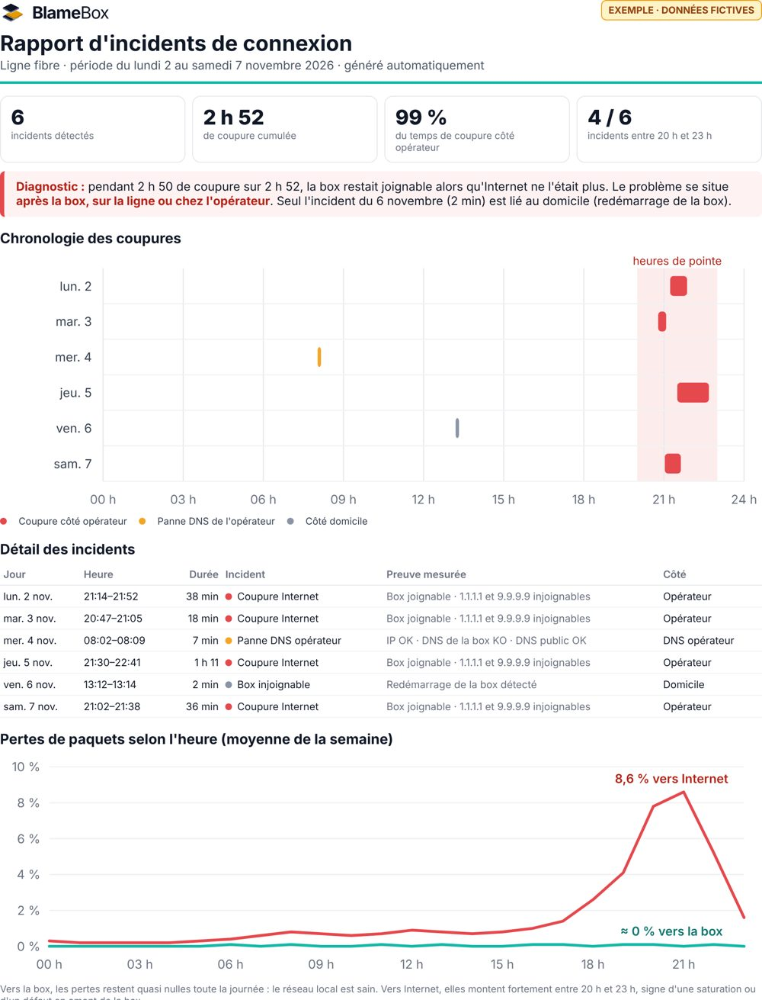

Wi-Fi, box, opérateur ou DNS : un petit outil libre qui tourne chez toi surveille ta connexion 24 h/24, explique chaque panne en clair… et prépare le rapport à envoyer à ton opérateur.
Ta box répond normalement, mais aucun serveur Internet n'est joignable. Le problème est après ta box : sur la ligne ou chez ton opérateur. Rien à changer chez toi.
Toutes les 30 secondes, il teste ta connexion couche par couche. La première étape qui échoue indique où se situe le problème.
Elle ne répond plus ? Le souci est chez toi : box, câble ou Wi-Fi.
La box répond, mais plus Internet ? C'est la ligne ou l'opérateur.
Internet répond, mais les sites ne s'ouvrent pas ? Le DNS de ton opérateur est en panne, et on te dit comment le contourner.
Pertes et latence le soir, mesurées vers ta box et au-delà, pour repérer la saturation.
Fini les « avez-vous redémarré votre box ? ». Tu envoies des faits.

Le cœur de l'outil est libre et le restera. Une version Pro est envisagée pour ceux qui en veulent plus.
Pour comprendre ce qui se passe
Pour agir et garder des preuves
D'un appareil allumé en permanence et branché en câble sur ta box : Raspberry Pi, NAS, mini-PC, ou un ordinateur avec Docker.
Nulle part. Tout tourne et reste chez toi, sans compte ni cloud.
Oui, avec tous. Le rapport est pensé pour les opérateurs français (Orange, Free, SFR, Bouygues…), mais les mesures valent partout.
L'outil est en développement. Inscris-toi pour tester la première version et donner ton avis.
Inscris-toi : tu seras prévenu du lancement et tu pourras tester en avant-première.
Ton e-mail sert uniquement à te prévenir du lancement. Désinscription en un clic.